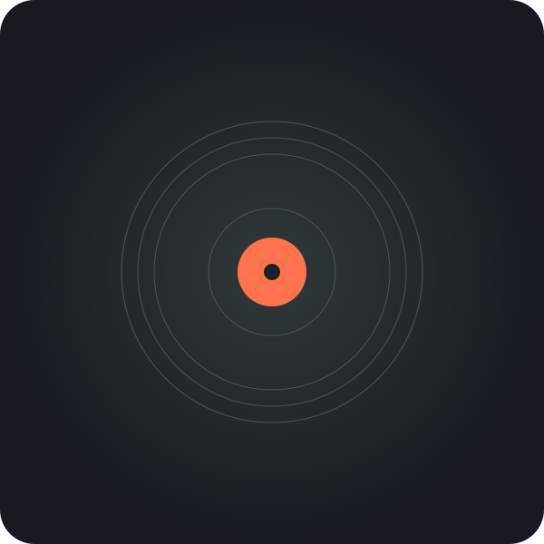

Твоя очередь
Всё, что хочется услышать дальше.
Личное прослушивание
Сейчас и дальше
0 трековНачни с любимой песни
Выбери трек в плеере.
Его очередь появится здесь автоматически.
Сейчас играет
Выбери трек
0:000:00

Найди любимую песню или открой каталог.
Всё, что хочется услышать дальше.
Выбери трек в плеере.
Его очередь появится здесь автоматически.